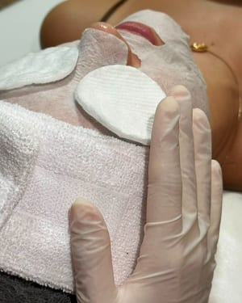
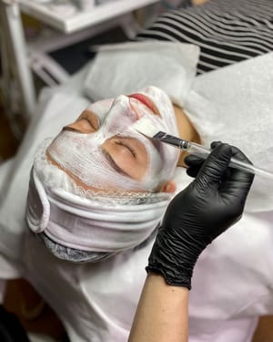
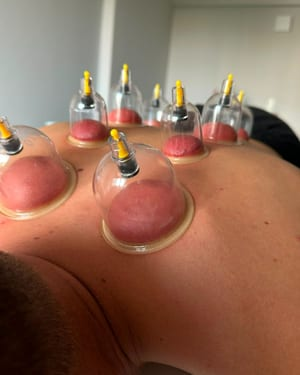
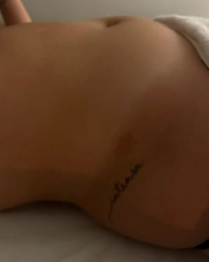

Um cuidado pensado pra sua pele, não pra todas.
Avaliação individual, sem compromisso, e protocolos faciais e corporais com resultado gradual e natural, em João Pessoa.
- Esteticista & Cosmetóloga
- Pós-graduanda em Estética Avançada
- Avaliação individual
- João Pessoa – PB
Talvez você tenha chegado aqui por isso.
-
Cravos, oleosidade e poros
“Minha pele vive oleosa e com cravos, e nada resolve.”
Uma limpeza de pele bem feita, com constância, equilibra a oleosidade e prepara a pele para o resto.
-
Marcas de acne e linhas finas
“A acne passou, mas as marcas e os poros ficaram.”
O microagulhamento trabalha textura, marcas e poros, em sessões no ritmo da sua pele.
-
Pele cansada, sem viço
“Me vi numa foto e pensei: eu não paro pra me cuidar.”
A revitalização facial hidrata, nutre e recupera a barreira da pele. Às vezes é só disso que ela precisa.
-
Inchaço, tensão e cansaço
“Sinto o corpo pesado, inchado e cheio de tensão nas costas.”
Drenagem, ventosaterapia e massagem cuidam da circulação, das tensões e do seu descanso.
Seis cuidados, um plano feito pra você.
Facial e corporal, no estúdio da Iza. O que faz sentido pra você é definido na avaliação. Em dúvida, toque em “É pra mim?” e pergunte direto.
-

Limpeza de pele
Remove impurezas, cravos e células mortas, com extração cuidadosa e calmantes. Ajuda no controle da oleosidade e deixa a pele preparada para os outros cuidados.
-
Microagulhamento
Microperfurações controladas que estimulam a renovação da pele e a permeação de ativos. Indicado para marcas de acne, poros dilatados, linhas finas e textura.
-

Revitalização facial
Hidratação, nutrição e recuperação da barreira da pele, com ativos escolhidos para a sua necessidade. Para uma pele mais macia, hidratada e luminosa.
-

Ventosaterapia
Ventosas que mobilizam os tecidos e ativam a circulação, aliviando tensões e contraturas. Pode ser combinada com outros cuidados, conforme a avaliação.
-
Massagem relaxante
Movimentos suaves e contínuos para soltar as tensões, reduzir o estresse e dar ao corpo uma pausa de verdade. Bem-estar físico e mental.
-

Drenagem linfática
Técnica suave que estimula o sistema linfático, ajudando a reduzir o inchaço e a retenção de líquidos. O protocolo é adaptado a cada pessoa.
Pele saudável não é pele perfeita. É pele cuidada por alguém que olhou pra você.

Sou esteticista e cosmetóloga, e hoje curso pós-graduação em Estética Avançada. Escolhi essa profissão porque acredito que saúde, estética e autoestima andam juntas: quando a pele está bem cuidada, a gente se olha com mais carinho. Atendo em João Pessoa, e cada pessoa que chega aqui sai com um plano feito pra ela.
Na prática, isso significa começar sempre pela avaliação: olhar sua pele de perto, ouvir sua rotina e entender o que te incomoda antes de sugerir qualquer coisa. Trabalho só com cosméticos e equipamentos próprios da estética, explico cada etapa e os valores antes de começar, e você decide com calma. Resultado, pra mim, é gradual, natural e seu.
Um lugar pensado pra você desacelerar.


Do primeiro oi ao seu protocolo.
-
Você manda um oi
Toque no botão: a mensagem já vai pronta, é só completar com o que te incomoda. Não precisa saber o nome de nenhum procedimento.
-
Avaliação sem compromisso
Na avaliação, a Iza olha sua pele de perto, ouve sua rotina e explica as opções e os valores. Você decide depois, sem pressão.
-
Protocolo e acompanhamento
Com o objetivo claro, vocês montam o protocolo e o calendário de sessões. Entre uma e outra, orientação de rotina em casa e acompanhamento.
Não precisa saber o que escrever.
O botão já abre o WhatsApp com a primeira mensagem pronta. Você só completa.
Três motivos pra começar por aqui.
-
Formação dupla
Esteticista e cosmetóloga: ela entende a técnica e o produto que vai na sua pele, e escolhe os dois na sua avaliação.
-
Estudo que não para
Pós-graduanda em Estética Avançada: o que ela aplica em você passa por estudo, não por tendência de rede social.
-
Uma pessoa, um plano
Atendimento individual, do início ao fim, com protocolo montado na sua avaliação e ajustado conforme a sua pele responde.
Na palavra de quem veio.
“Cheguei achando que ia sair com um orçamento gigante. Saí entendendo minha pele pela primeira vez. A Iza explica tudo com calma e nunca me empurrou nada.”
“Minhas manchas me incomodavam há anos. Com o protocolo e a rotina que ela montou, minha pele está mais uniforme e, principalmente, eu voltei a cuidar de mim.”
“Tinha vergonha de perguntar o que eu precisava. Mandei a mensagem do site, ela respondeu rápido e na avaliação me senti acolhida. O espaço é lindo e muito limpo.”
O que você talvez queira saber antes.
Preciso fazer avaliação antes?
Sim, e é o melhor começo. Na avaliação a Iza olha sua pele de perto, ouve sua rotina e entende o que te incomoda. Só depois disso ela sugere um protocolo, e você decide com calma, sem compromisso.
Dói ou incomoda?
A maioria dos cuidados é confortável. A extração na limpeza de pele e o microagulhamento podem incomodar um pouco, de forma passageira. A Iza explica o que esperar antes de começar e ajusta o ritmo ao que você sente.
Quanto custa?
Depende do que a sua pele precisa, por isso a avaliação vem primeiro. Os valores são informados antes de qualquer sessão, sem surpresa, e você decide com calma.
Quantas sessões vou precisar?
Varia com o objetivo. Limpeza de pele, revitalização, massagem e ventosaterapia costumam ser pontuais ou de manutenção; microagulhamento e drenagem linfática pedem algumas sessões. Você sai da avaliação com uma estimativa clara.
Como é a higiene e a segurança?
Biossegurança faz parte do atendimento: materiais descartáveis, higienização entre um atendimento e outro, e só técnicas, cosméticos e equipamentos próprios da estética. A Iza explica tudo antes de começar.
Onde fica e como agendar?
O atendimento é em João Pessoa – PB, com horário marcado. Para agendar, toque em qualquer botão desta página: o WhatsApp abre com a mensagem pronta, você completa com o que te incomoda e combina o melhor horário.
Em João Pessoa, com horário marcado.
João Pessoa – PBAtendimento com horário marcado.
Seu horário está a uma mensagem de distância.
Mande um oi, conte o que te incomoda e combine o melhor horário. Sem compromisso.